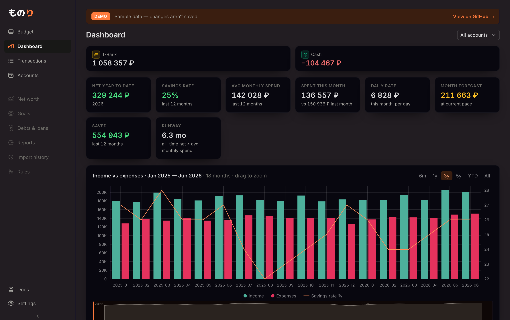

По твоему выбору B: темнее становятся и холст, и сами карточки, но
карточки остаются чуть светлее фона — глубина держится. Карточки теперь
сплошной заливкой (не полупрозрачные), поэтому их затемнение видно явно, а не
теряется. Фиолетовое свечение на холсте сохранено. Три шага глубины — выбери, применю в
theme.css.
